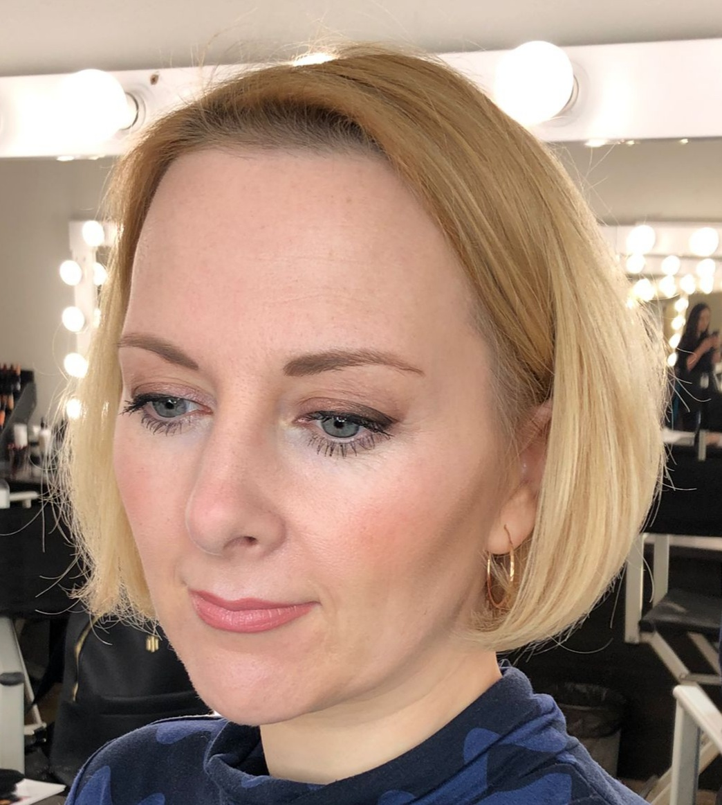

Victoria Bogomolnaya

Personal Statement
As a banking professional with more than 15 years of experience, my
passion lies in the intersection of client relationship management,
compliance, project management and technologies. I am very interested in
the automatization and process improvement within the financial sector.
Education
-
BA school of Business and Finance [ 01/09/2003 – 02/02/2009] - Master's
degree of professional higher education, Finance
-
ACAMS [ 01/09/2017 – 31/01/2018] - Certified Anti-Money Laundering
Specialist
- Udemy Courses, LU Open Minded - Self-education - Always
Work experience
-
Team Manager VIP Customer Service
June 2014 - Current
- Coordination the work of team members
-
Assisting team members in resolving complex issues and providing
guidance
- Conducting training sessions for new employees
-
Client relationship manager
February 2009 - Current
-
Communication with the bank's clients remotely (phone, e-mail,
internet-banking system) and in person
-
Resolving technical, compliance, and other issues that may arise
between the bank and its clients
- Ensuring compliance with relevant regulations and guidelines
Language skills
- English: Fluent
- Latvian: Fluent
- Russian: Native
Professional skills
- Communication and Interpersonal Skills 🌟🌟🌟🌟🌟
- Compliance and Regulatory Knowledge 🌟🌟🌟🌟🌟
- Financial Analysis 🌟🌟🌟🌟
- Team Leadership 🌟🌟🌟🌟
- Computer literacy 🌟🌟🌟🌟
Additional information